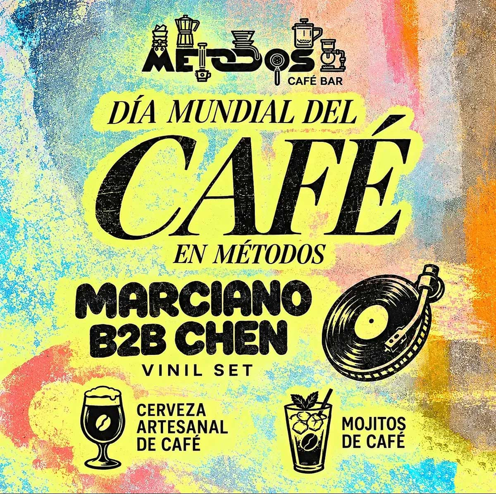

DÍA MUNDIAL DEL CAFÉ
fecha: 01/10/26 hora: 8pm
lugar: Métodos Café,
Av. Ricardo Palma con Jirón Kiteni, Quillabamba

El café despierta la memoria; el vinilo la pone a bailar. Hoy desde las 8:00 pm
En Métodos celebramos el Día Mundial del Café entre aromas, surcos y canciones que merecen escucharse sin prisa. Marciano b2b Chen al frente de las tornamesas, dejando que cada disco encuentre su momento.
Cerveza artesanal y mojitos de café para brindar por las buenas conversaciones y ese último tema que siempre nos hace quedarnos un poco más. ☕🖤